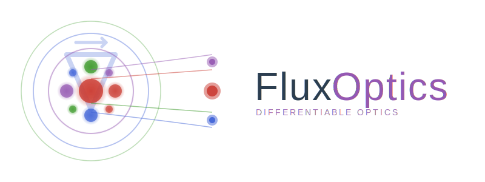

FluxOptics.jl
Differentiable optical propagation and inverse design in Julia
FluxOptics.jl is a Julia package for simulating scalar optical field propagation with full support for automatic differentiation. Design and optimize optical systems through gradient-based methods.
Features
- 🌊 Scalar field propagation: Angular Spectrum, Rayleigh-Sommerfeld, Collins integral, Beam Propagation Method
- 🎭 Optical components: Phase masks, amplitude masks, DOEs, graded-index media
- 🎯 Optimization ready: Fully differentiable with Zygote/Enzyme support via ChainRulesCore
- 🔧 Proximal operators: TV regularization, sparsity, constraints
- 📊 Built-in metrics: Power coupling, field matching, intensity shaping
- 🚀 GPU support: CUDA acceleration available
Quick Example
using FluxOptics, CairoMakie
# 1. Create Gaussian source
gaussian = Gaussian(20.0)
xv, yv = spatial_vectors(256, 256, 1.0, 1.0)
u = ScalarField(gaussian(xv, yv), (1.0, 1.0), 1.064)
source = ScalarSource(u)
# 2. Optical system with vortex phase mask
probe = FieldProbe()
vortex_phase = Phase(u, (x, y) -> atan(y, x)) # topological charge l=1
propagator = ASProp(u, 1000.0) # 1mm far-field propagation
system = source |> vortex_phase |> probe |> propagator
# 3. Execute system
result = system()
output_mode = result.out
probe_mode = result.probes[probe]
# 4. Visualize evolution
visualize((probe_mode, output_mode), (intensity, phase);
colormap=(:inferno, :viridis), show_colorbars=true, height=120)Documentation Structure
Tutorials
Learn FluxOptics through practical examples covering inverse design and optical simulation:
Fox-Li Cavity Simulation: Find cavity eigenmodes in a semi-degenerate laser resonator. Demonstrates iterative simulation, gain media, and quasi-Ince-Gaussian mode formation near degeneracy points.
Phase Retrieval from Intensity: Reconstruct complex optical fields from intensity-only measurements. Shows gradient-based optimization, multi-plane propagation, and handling non-convex inverse problems.
Multi-Wavelength Beam Shaping: Design chromatic diffractive optical elements that independently control red, green, and blue beams. Illustrates wavelength-dependent optimization and cascaded DOE systems.
Waveguide Tomography: Reconstruct refractive index profiles of photoinscribed waveguides from angle-resolved intensity data. Demonstrates full-wave tomography with joint aberration estimation.
API Reference
Complete documentation of all modules, types, and functions:
- GridUtils: Coordinate systems and transformations
- Modes: Gaussian beams, HG/LG modes, spatial layouts
- Fields: ScalarField type and field operations
- Optical Components: Propagators, masks, sources, systems
- OptimisersExt: Optimization rules and proximal operators
- Metrics: Loss functions for inverse design
Getting Help
- 📖 Browse the API Reference for detailed function documentation
- 💬 Open an issue on GitHub for bugs or feature requests
- 📧 Contact the maintainers for questions
Citation
If you use FluxOptics.jl in your research, please cite:
@software{fluxoptics2025,
author = {Barré, Nicolas},
title = {FluxOptics.jl: Differentiable Optical Simulations},
year = {2025},
url = {https://github.com/anscoil/FluxOptics.jl}
}